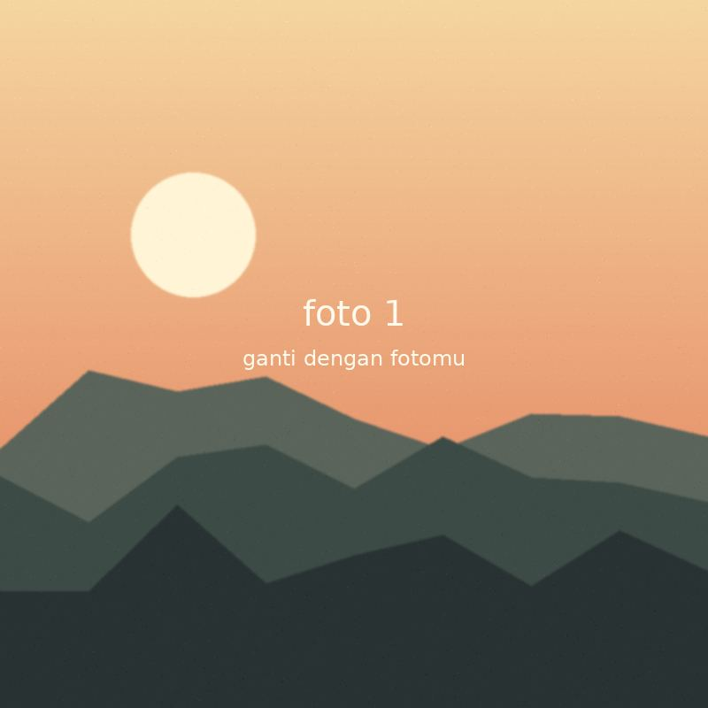
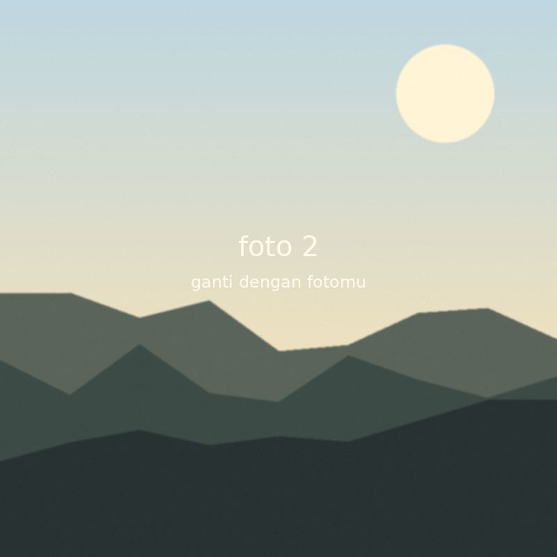
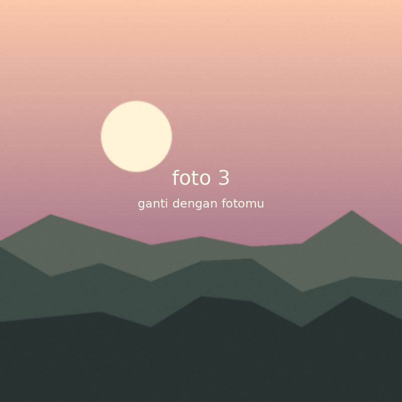
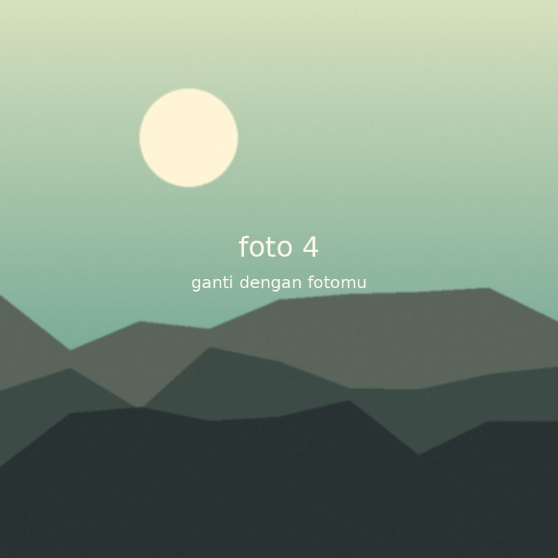
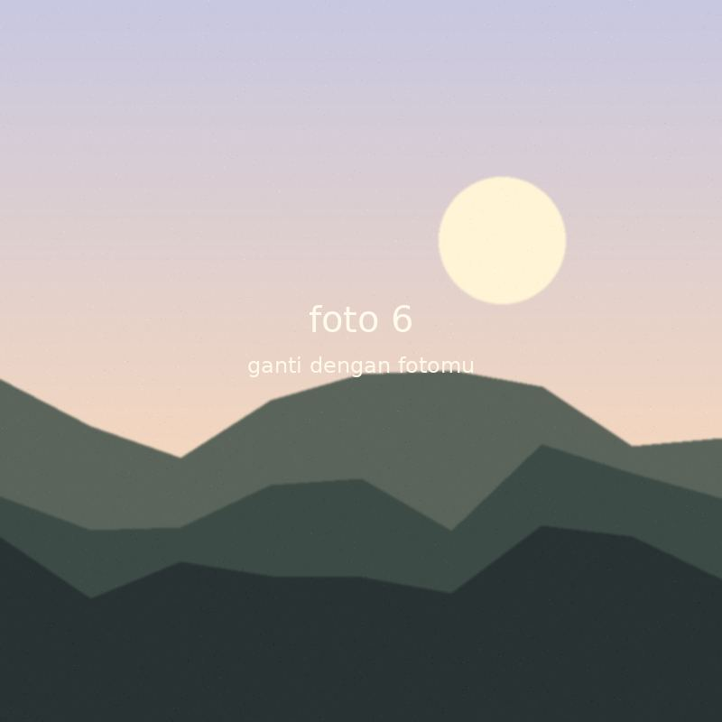

album kenangan no. 01
A Little Book of
21 November 2026
Hai, Nama. Kalau kamu sedang membaca ini, berarti aku akhirnya berani menyelesaikannya. Ini bukan permintaan apa-apa. Hanya papan kecil untuk menyimpan hal-hal baik yang pernah ada di antara kita.foto foto berikutnya jangan lupa di click yaa

Aku gugup sepanjang jalan, tapi kamu tertawa.

Restorannya hampir tutup, kita masih bercerita.

Es krimnya mencair. Kita tidak peduli.
Dua orang berteduh selama berjam-jam di bawah atap halte. Saksi mata menyebut tak seorang pun dari mereka tampak ingin hujan segera reda.
"Aku tidak ingin hujannya berhenti," kata salah satunya, pelan.


LAGU BUAT KAMU · Side A
ketuk untuk memutar ▶
jangan lupa makan ya
kopinya terlalu pahit, tapi tetap dihabiskan
lagu itu lagi?
hujan = alasan berteduh bareng
untuk: Nama
ketuk untuk membuka ✉
untuk tawa, cerita, sabar, dan kenangan yang tetap baik.
Semoga kamu selalu baik-baik saja, di mana pun kamu berada.
That's all for now.
Web testing ari
A Little Book of
21 November 2026
ketuk papan untuk menempel stiker
Untuk (nama),
Aku tidak tahu kapan surat ini sampai padamu, atau apakah kamu akan membacanya sampai habis. Tidak apa-apa. Aku menulisnya supaya semuanya terasa selesai dengan baik.
Banyak hal yang ingin kusampaikan, tapi aku memilih yang paling jujur: aku bersyukur pernah mengenalmu. Kamu mengajariku tentang sabar, tentang berani, dan tentang menikmati hari yang biasa-biasa saja.
Kalau ada hal yang dulu kurang baik dariku, aku minta maaf. Dan kalau ada hal baik yang tersisa, semoga itu cukup untuk dikenang tanpa rasa berat.
Aku harap kamu bahagia, dikelilingi orang-orang yang menyayangimu, dan selalu punya alasan untuk tersenyum.
Dengan hangat,
Namamu